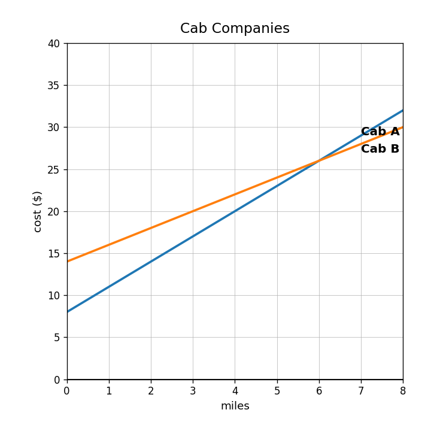
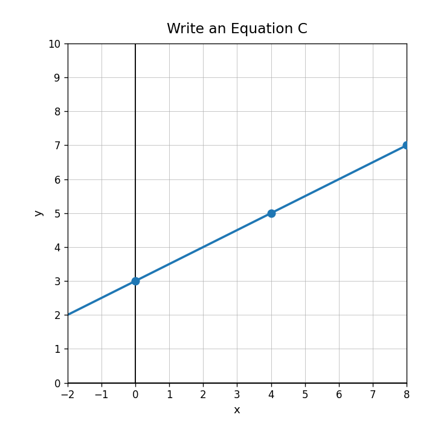
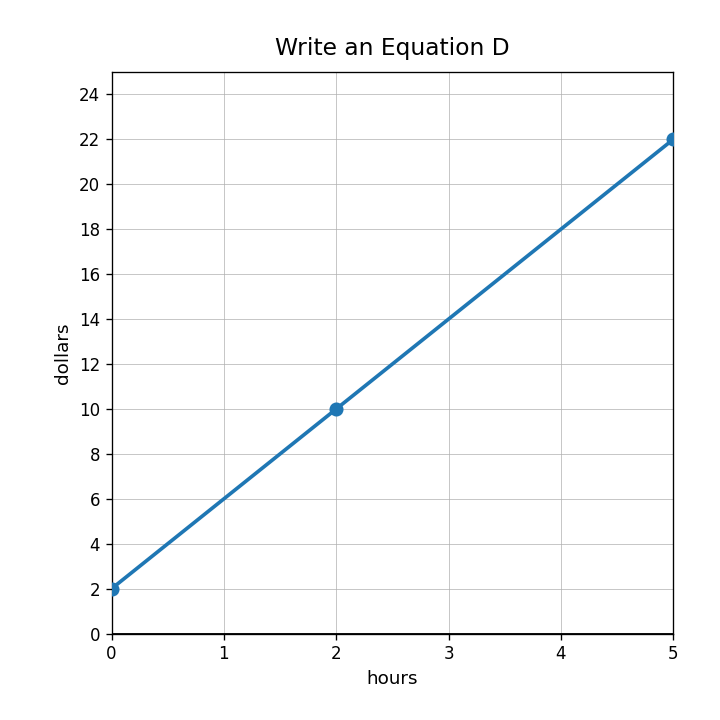
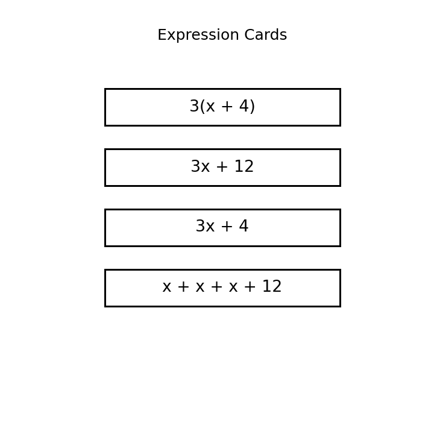

Which relationship grows faster: $y=12x+3$ or $y=8x+30$?
Use the cab company graph. Which cab is cheaper for 1 mile? Which increases more per mile?

A table shows outputs 20, 28, 36, 44. An equation is $y=6x+24$. Explain whether they have the same rate of change and starting value.
Plan A costs $40 plus $5 per day. Plan B costs $10 plus $11 per day. Create a comparison table and recommend a plan for short-term and long-term use.
In $d=45t+12$, identify the rate of change and starting value.
Use the graph to write a linear equation.

What is the starting value in the table?
| minutes | 0 | 2 | 4 | 6 |
|---|---|---|---|---|
| height | 50 | 44 | 38 | 32 |
Write a model for a babysitter who charges $12 per hour with no starting fee.
Use the earnings graph. Write an equation and identify the meaning of the slope.

Write an equation for this relationship.
| $x$ | 0 | 3 | 6 | 9 |
|---|---|---|---|---|
| $y$ | 2 | 11 | 20 | 29 |
A situation starts at 100 and decreases by 8 each step. A student writes $y=100x-8$. Explain the mistake and correct the model.
Create a graph description, table, and equation for a relationship with rate of change $\frac{3}{2}$ and starting value 6.
Which terms are like terms in $5x+7+2x$?
Which expression cards are equivalent? Justify your choice.

Explain why $6x+6$ can be written as $6(x+1)$.
Create three different expressions equivalent to $4x+12$. Explain which form is most useful for seeing the common factor.